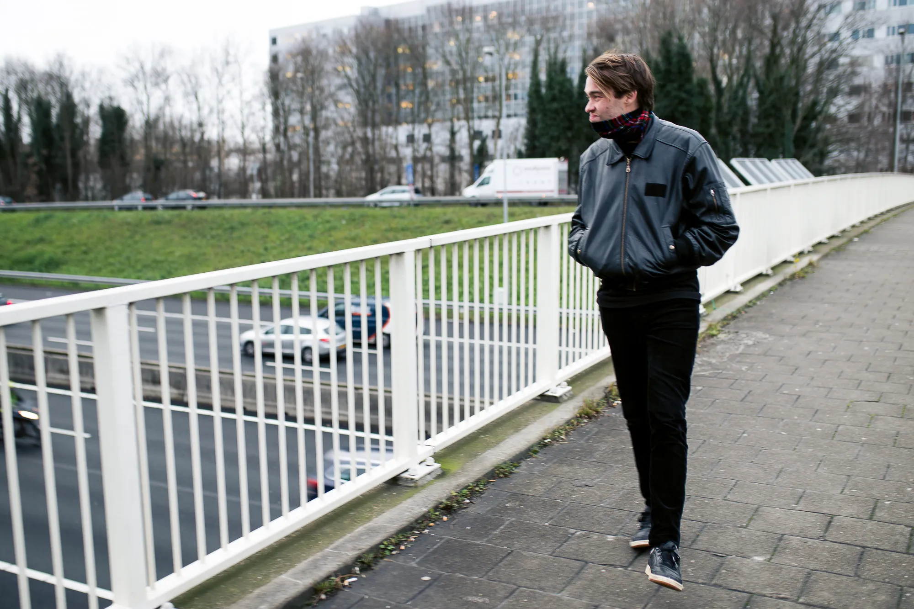

Jaartallen zijn natuurlijk ook maar een construct, maar het eind van het jaar nodigt toch uit tot wat reflectie. Daarom schreven de VICE.com-redacteurs een persoonlijk essay over wat ze het afgelopen jaar over zichzelf hebben geleerd.
Er was ooit een stagiair op de VICE-redactie aan wie ik had gevraagd of-ie een artikel – tekst en foto's – wilde uploaden in het CMS, de achterkant van de website waar je nu naar kijkt. Een uurtje later vroeg ik of het was gelukt, en hij antwoordde dat dat zo was, maar toen ik een kijkje nam moest ik in mijn arm knijpen om te geloven wat ik zag. De tekst en de foto's stonden erin, maar alle foto's waren 90 graden gedraaid.
Ik was hier lang van ontdaan. Iedereen maakt fouten, zeker stagiairs, en het was ook geen grote moeite om het zelf even allemaal recht te zetten, maar de oneindigheid aan onbegrip in mijn hersenpan was te overweldigend. Normaal gesproken kun je je, met een beetje inlevingsvermogen, min of meer voorstellen hoe iets fout is gegaan. Iemand die een fout maakt heeft doorgaans een verkeerde logica gehanteerd, iets niet juist beredeneerd, of iets over het hoofd gezien. Maar hier was iets gebeurd in iemands hoofd waar ik op geen enkele manier iets van kon begrijpen, en dat maakte me volkomen radeloos.
Precies die radeloosheid zag ik dit jaar meerdere malen in de ogen van mijn rijinstructeur.
Ik had besloten om rijles te nemen. Er was niet echt een reden, behalve dat ik besefte dat er nooit écht een reden zou zijn, dat ik een volwassener mens zou moeten zijn, en dat een collega er ook mee begon.
Het werden lessen in vernedering.
Mocht je ooit verdwaald zijn in het examengebied van Amsterdam – Slotermeer, Geuzenveld en het Westelijk Havengebied – bel me gerust. Als je je afvraagt in welke versnelling je de toerit S105 naar de snelweg richting Haarlem het beste kunt nemen trouwens ook. Ik heb er het asfalt aan flarden gereden. In het begin was het best verfrissend om vanuit niks iets totaal nieuws te leren. Alleen toen ik over de drieduizend euro aan lesgeld heen ging, en het zicht op een rijbewijs nog steeds niet aan de horizon van de A10 gloorde, ging het frisse er wel een beetje vanaf. Het begon allemaal meer naar een vergeten zak sla achterin mijn koelkast te ruiken.

foto door David Meulenbeld
Op een warme dag fietste ik richting Breukelen, en vlak voor Abcoude moet je dan over een viaduct de A2 oversteken – een vijfbaanssnelweg. Ik bleef halverwege staan en staarde minutenlang naar die tien dikke stromen aan auto's, honderden per minuut, die onder me door over het asfalt heen raasden. Auto's met achter het stuur oma's, halve zolen, mensen zonder middelbareschooldiploma, mensen met een strafblad, mensen met een duivelse muzieksmaak, hooligans, riekende mensen, radio-dj's, mensen met een onverzorgd gebit, dierenbeulen, gebochelde mensen, mensen die weleens een colbert met daaronder een ludiek T-shirt dragen, mensen die niet weten wat Emile Durkheim voor het Functionalisme heeft betekend. Zoals ik. Maar ook: allemaal mensen die wél hun rijbewijs hadden. De hele wereld heeft immers z'n rijbewijs. Iedereen kan dit. Waarom was dit het moeilijkste wat ik ooit in mijn leven had gedaan?
Het waren geen gelukkige maanden. Ik moest me het schompes werken om de kantooruren die ik door de rijlessen had gemist in te halen, en aan het eind van elke maand hield ik door die dure lessen geen dubbeltje over. Toen ook de rijlessen zelf voor de kat z'n kut leken omdat ik keer op keer faalde voor m'n examen, leek het alsof alle moeite die ik week in week uit in mijn leven stopte geen reet opleverde.
Achteraf gezien was dat onzin, want de echte lessen gingen over veel meer dan alleen invoegen, afslaan en de goeie rijstrook kiezen. Ik leerde hoe het is om ergens hondsberoerd in te zijn, om te falen, met alle inzichten die dat opleverde.
Zo was de manier waarop mensen troost bieden onbeholpen en hartverwarmend tegelijk. Na de eerste keer zakken was het vinden van troostende woorden het makkelijkst: iets in de trant van 'ah joh bijna niemand haalt het de eerste keer'. Toen ik voor de tweede keer met de billen bloot moest over m'n falen, kende iedereen wel iemand die er ook drie keer over had gedaan, werd het humeur van de betreffende examinator als doorslaggevende oorzaak aangehaald, en werd het scheepsrecht weer eens afgestoft. Na drie keer zakken begonnen de relativerende zaken op te raken, en moesten mensen zich in nog moeilijkere bochten wringen. Ik werd voorgesteld aan het selecte groepje prutsers die óók vaker dan drie keer examen hadden gedaan. Ik werd op Lowlands gesommeerd om eens te praten met Frank, die staatsexamen moest doen, en werd tijdens een boottochtje door een barmhartige Samaritaan op een bankje naast Fabiënne gezet, die er zelfs vijf keer over had gedaan.
Het verzachtte de vernederingen amper, maar de moeite die mensen erin stopten waren ontroerend, én nieuw. Voor mij althans. En daar zat de echte les die ik in 2018 leerde. Ik werd met mijn neus op het feit gedrukt dat ik nooit eerder in m'n leven echt heb gefaald. Op school ging het altijd wel prima, daarna ging ik in de stad waar ik al woonde de veiligste studie der studies studeren – communicatiewetenschap – en toen rolde ik via een stage in een baantje waar ik altijd maar ben blijven werken. De combinatie van een klein beetje talent, privileges, maar bovenal een grote liefde voor comfort en daaruit volgend alle veilige keuzes die ik mijn hele leven heb gemaakt, maakten dat nooit in mijn leven plat op m'n bek ben gegaan.
Dat stukje zelfinzicht was confronterender dan het onbegrip in de ogen van m'n rijinstructeur, toen ik voor de drieënveertigste keer de verkeerde van de twee rijstroken op het verkeerspleintje koos. Aardig goed zijn in alles wat je doet is misschien helemaal niet hetzelfde als alleen doen waar je aardig goed in bent, besefte ik. En hoewel ik geen heerlijkere plek ken dan mijn warme comfortbubbeltje, aangezien ik 'm nooit echt heb verlaten, kan ik me voorstellen dat een eventueel grootser en meeslepender leven er ergens buiten ligt. Een leven waarin ik een jaartje op een boerderij in Nepal woon, een fietsenwinkel in Oeganda begin, drumles neem, mijn prille tekentalent uitbouw, witte pakken ga dragen, een nieuw beroepje uitprobeer, een kameleon in huis neem.
In 2019 ga ik eerst maar eens mijn rijbewijs halen, maar ik neem me voor om ook daarna op z'n minst een paar minder veilige keuzes te maken. Ik vermoed dat daar de echte winst te halen valt.